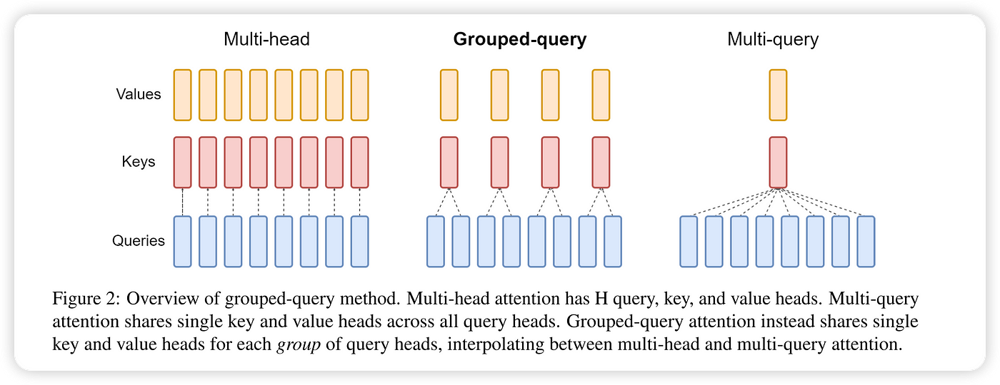

什么是 Grouped-Query Attention?
- by @karminski-牙医

Grouped-Query Attention（分组查询注意力）是 Transformer 架构的改进型注意力机制，在多头注意力（MHA）和多查询注意力（MQA）之间取得平衡。通过分组共享键值投影，在保持模型容量的同时显著降低计算资源消耗。
工作原理
给定输入向量 $Q$（查询）、$K$（键）和 $V$（值），GQA 将查询头分组处理：
$$ \text{GroupedQuery}(Q, K, V) = \text{Concat}(\text{group}_1, \ldots, \text{group}_g)W^O $$
每个组内共享键值投影：
$$ \text{group}i = \text{Attention}(QW_i^Q, KW{\lfloor i/m \rfloor}^K, VW_{\lfloor i/m \rfloor}^V) $$
其中：
- $g$ 为分组数（通常 $g \ll h$）
- $m = h/g$ 每组包含的头数
- $W_i^Q \in \mathbb{R}^{d_{model}\times d_k}$ 为每组独立的查询投影
- $W_j^K, W_j^V \in \mathbb{R}^{d_{model}\times d_k}$ 为组间共享的键值投影
核心机制
动态分组策略：
- 将 $h$ 个查询头划分为 $g$ 个组
- 每组包含 $m=h/g$ 个查询头共享同一组键值投影
- 通过线性投影实现特征空间的分组耦合
参数效率： 总参数量为： $$ \underbrace{hd_kd_{model}}{\text{查询投影}} + \underbrace{2gd_kd{model}}{\text{键值投影}} = (h + 2g)d_kd{model} $$ 相比 MHA 减少 $3hd_kd_{model} - (h+2g)d_kd_{model}$ 参数
优点
- 显存优化：键值缓存显存占用降至 MHA 的 $g/h$，例如 8 头分组为 2 组时显存减少 75%
- 质量保留：PaLM 2 实验显示，GQA（g=8）与 MHA 相比在质量指标上差异小于 0.5%
- 灵活扩展：通过调整分组数 $g$ 实现质量与效率的连续调节：
- $g=h$ 时退化为标准 MHA
- $g=1$ 时等价于 MQA
缺点
- 分组调优成本：需要实验确定最佳分组数，不同任务/架构可能有不同最优配置
- 投影偏差风险：共享键值投影可能限制不同组的特征多样性
- 实现复杂度：需要管理分组投影的矩阵运算，可能引入额外的张量变换开销
性能对比
GQA 论文中使用的T5 Large 和 XXL 模型在多头注意力、5% 训练的 T5-XXL 模型在多查询和分组查询注意力下，在摘要数据集 CNN/Daily Mail、arXiv、PubMed、MediaSum 和 MultiNews，翻译数据集 WMT，以及问答数据集 TriviaQA 上的推理时间和平均开发集性能比较。
| 模型 | 推理时间 (s) | 平均 | CNN | arXiv | PubMed | MediaSum | MultiNews | WMT | TriviaQA |
|---|---|---|---|---|---|---|---|---|---|
| MHA-Large | 0.37 | 46.0 | 42.9 | 44.6 | 46.2 | 35.5 | 46.6 | 27.7 | 78.2 |
| MHA-XXL | 1.51 | 47.2 | 43.8 | 45.6 | 47.5 | 36.4 | 46.9 | 28.4 | 81.9 |
| MQA-XXL | 0.24 | 46.6 | 43.0 | 45.0 | 46.9 | 36.1 | 46.5 | 28.5 | 81.3 |
| GQA-8-XXL | 0.28 | 47.1 | 43.5 | 45.4 | 47.7 | 36.3 | 47.2 | 28.4 | 81.6 |
Refs
GQA: Training Generalized Multi-Query Transformer Models from Multi-Head Checkpoints